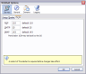

Changes to the options don't take effect until after Thunderbird has been restarted.
- Servers



This panel controls the POP, SMTP, and IMAP servers
- Status
This tab show the status of the three servers. There are three possible values.

|
Running |

|
Stopped |

|
Error |
- Enable
This tab is used to enable or disable servers. By default the POP and SMTP servers are enabled.
- Ports
This tab is used to set the port numbers of the servers. By default POP=110, SMTP=25, IMAP=143.
Some operating systems block ports below 1024.
- General

The option “Add WebMail to Account Wizard” simplifies the POP account creation process by automatically setting the port number and server name.
- Domains

This panel displays the supported domains.
- Logging

This panel is used to enable/disable logging. By default this is disables.